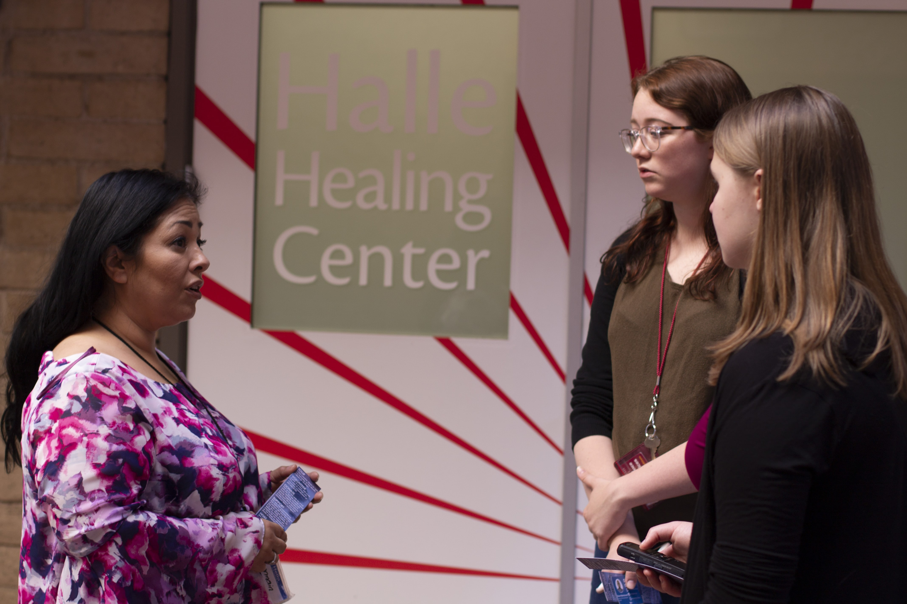

Sin Hogar En Perspectiva
La indigencia en Phoenix es un tema sensible y en ocasiones puede ser de gran controversia. Dicho esto, como reporteros, reconocemos la complejidad del asunto y que una semana no es suficiente para cubrir en su plenitud este problema humanitario.
SIN HOGAR da luz a los desafíos diarios que enfrentan estos ciudadanos que sufren de la indigencia y quienes frecuentemente se pueden encontrar sin un verdadero rumbo. Además buscamos informar al público sobre posibles soluciones.
Nuestro equipo tuvo algunos retos mientras realizamos nuestros reportajes y nuestra meta es ser lo más transparentes posible sobre el proceso y en los reportajes.
En ocasiones, algunos individuos deseaban no salir en cámara o mantener su identidad anónima. Muchos dijeron que estaban cansados de ver a reporteros cubrir el tema sin realmente intentar ejercer un cambio. Para otros, sus historias habían sido presuntamente manipuladas por algunos medios y no le hacían justicia a sus respectivas narrativas.

Dejando a un lado las preocupaciones de nuestras fuentes, el equipo tuvo algunas inquietudes. Mientras producimos nuestro proyecto, nos percatamos que en ocasiones tendemos a asumir cuando se trata de un tema tan sensible como la indigencia, sobre todo cuando la mayoría de nuestro equipo nunca ha tenido esta experiencia en su vida personal. Por lo tanto, nos dimos a la tarea de recopilar información de la forma más imparcial y así dejar a un lado la editorial para este proyecto.

Además reconocemos que cada historia es particular e independiente y que la indigencia es sumamente compleja por lo cual reconocemos que una semana limita nuestra capacidad de investigar completamente la situación.
Nuestro equipo, compuesto por reporteros oriundos de diferentes estados y de diferentes partes del mundo, viajó al recinto del Centro de Phoenix de la Universidad Estatal de Arizona como parte del adiestramiento del programa de pasantías del Dow Jones News Fund. En una semana,el grupo recibió varias sesiones de adiestramiento. Es nuestro mayor interés informar y orientar a nuestro público sobre el asunto pertinente al proyecto SIN HOGAR.
De parte de los 20 reporteros del programa de pasantía del Dow Jones News Fund 2018, esperamos que disfrute de nuestro proyecto.